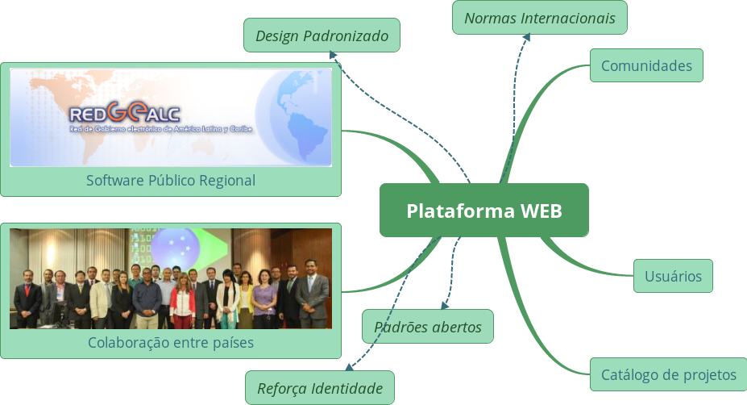

Portal de Software Público Regional
Estado de Desarollo
Álvaro Justen
12 de Agosto de 2016 - Montevideo
## ¿Quien habla?
- Álvaro Justen [alvarojusten@gmail.com](mailto:alvarojusten@gmail.com)
- 15+ años de experiencia en desarollo de software
- 11+ años de participación en comunidades de software libre
- Desarollador indepiendente:
- Desarollo Web
- Crawling y parsing de datos
- Análisis de datos
- Proyectos de datos abiertos
- Profesor
- Programación ([Python](http://www.python.org/))
- Electronica ([Arduino](http://arduino.cc/))
Plataforma de Software Público Regional

## Etapas del Proyecto
- Entregable 1: Descripción de la Plataforma
- [✓] Entregado ("Documento de base de funcionalidades da Plataforma")
- Entregable 2: Desarrollo de la versión preliminar
- [⏳] Trabajando
- Entregable 3: Documentación de Mantenimiento y Gerencia
- [⌛] Paso seguiente
## Desarrollo de la Versión Preliminar
- Gitlab:
- Infraestructura
- Configuraciones de usuarios y paises
- Adaptación de la interfaz
- Catálogo de soluciones:
- Modelo de datos
- Interfaz (frontend)
- Backend
- Captura de datos iniciales
- Funciones de registro
## Carga inicial de Datos
- Países
- Lenguajes de programación
- Licencias de software libre
- Categorías
## Demonstración de la Interfaz
## Entregable 2 - Estado Actual
- Gitlab:
- [✓] Infraestructura
- [⏳] Configuraciones de usuarios y paises
- [⏳] Adaptación de la interfaz
- Catálogo de soluciones:
- [✓] Modelo de datos
- [✓] Interfaz (frontend)
- Backend
- [✓] Captura de datos iniciales
- [⏳] Funciones de registro
## Paso Seguiente
- Finalizar tareas del Entregable 2
- Presentación en República Dominicana
- Finalizar Documentación de Mantenimiento y Gerencia (Entregable 3)